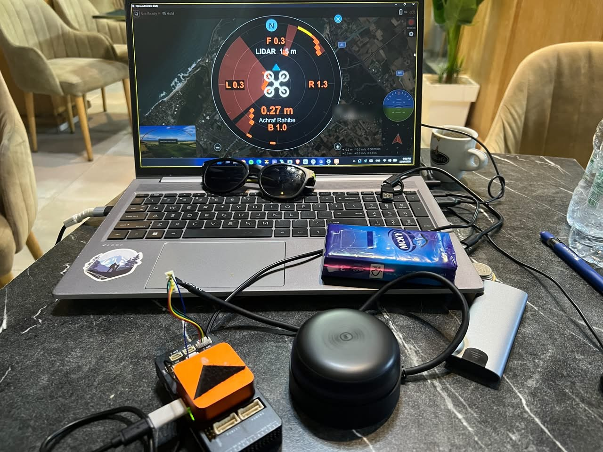

Avionics / autonomy
360° lidar obstacle avoidance for PX4 and ArduPilot
Give a multirotor 360° obstacle awareness from an RPLidar A2M12 wired straight to the flight controller, without a companion computer, on PX4 where no RPLidar driver existed.
Bench-tested on Pixhawk 6X and Cube Orange Plus; flight tests pending
Bench test: Cube Orange Plus, RPLidar A2M12 and the lidar radar inside QGroundControl.
My contribution
Wrote a PX4 driver for RPLidar scanners that publishes obstacle_distance for Collision Prevention, with a host test bench that runs the real driver against a simulated lidar. Traced a lidar that froze after every PX4 cold start to the board switching its 5 V peripheral rail off during boot, and patched the Pixhawk 6X and Cube Orange Plus board files to keep the rail on, as ArduPilot does. Added a MAVLink patch so the raw scan reaches the ground station, a lidar radar instrument loaded into QGroundControl without rebuilding it, and a desktop radar app. Configured ArduPilot's native RPLidar support on the same hardware.
Delivered work
Lidar streaming at 20 to 22 Hz on both flight controllers and starting first time after every cold start, with the scan shown live inside QGroundControl. Driver, patches, firmware, displays and build scripts published on GitHub.
Scope and validation
Scope: PX4 driver and patches, ground-station displays and bench integration on two flight controllers. Collision Prevention in flight has not been tested yet.